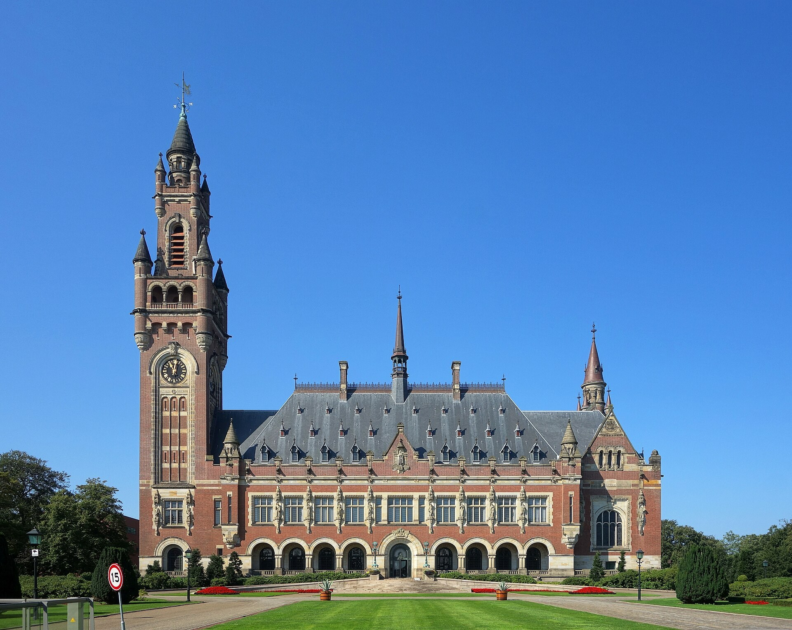

ICJ: Myanmar committed genocide against the Rohingya Muslims
The UN's top court ruled 9 votes to 6 in a landmark judgment; the decision is final and cannot be appealed.

The International Court of Justice (ICJ), the United Nations' top court, ruled on 19 November 2026 that Myanmar committed genocide against the Rohingya Muslim minority in northern Rakhine state during the 2016–2017 military "clearance operations". The judgment was adopted by 9 votes to 6 of the 15-judge panel and is final — it cannot be appealed.
What the court found
Presiding Judge Yuji Iwasawa said the court found that Myanmar's security forces killed thousands of Rohingya civilians, perpetrated widespread sexual violence, carried out acts of extreme violence against children, and attacked fleeing Rohingya. The 15-judge panel concluded that the only reasonable inference explaining Myanmar's actions was an intention to destroy a substantial part of the protected group — the Rohingya population.
By the numbers
An estimated 10,000 Rohingya were killed in the early stage of the 2017 operations. More than 700,000 people fled northern Rakhine for Bangladesh. Around 1.2 million Rohingya now live in refugee camps in Cox's Bazar, Bangladesh, while roughly 520,000 remain in Myanmar under severe restrictions.

What the court ordered
The court ordered Myanmar to enact legislation giving full effect to its obligations under the 1948 Genocide Convention, and to investigate and, where warranted, prosecute and punish all persons reasonably suspected of acts contrary to the Convention. It also ordered restitution, including the safe, voluntary and dignified return of the Rohingya, compensation for the damage caused, and protection from discrimination. The amount of compensation will be set later; Myanmar must report to the court on these measures within two years.
Who is responsible
The 2017 crackdown was commanded by Senior General Min Aung Hlaing, the chief of Myanmar's armed forces, who seized power in a 2021 coup that ousted the elected government and now leads the country. The ICJ ruling establishes state responsibility; criminal accountability for individuals remains a matter for the International Criminal Court (ICC) and other mechanisms.
Background
The case was brought to the ICJ in 2019 by The Gambia, a small Muslim-majority nation in West Africa, under the Genocide Convention. The proceedings lasted seven years. According to Al Jazeera, it was the first time in the ICJ's history that the court has found a state guilty of committing genocide.
International reaction
UN Secretary-General António Guterres welcomed the ruling, calling it "a demonstration of international justice and a reaffirmation that impunity for such horrific acts must not stand". At the same time, the ICJ has no mechanism to enforce its own rulings; practical implementation depends largely on international pressure and the UN Security Council.